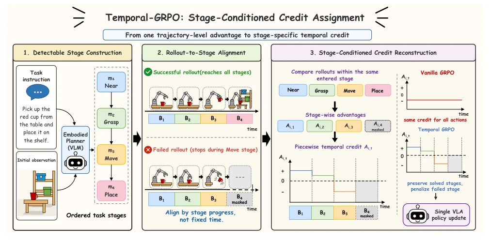
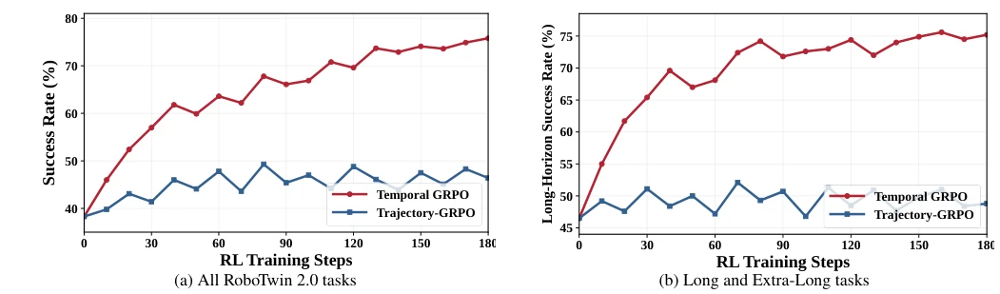
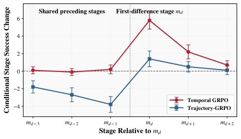

EN
← 返回 ← Back
Temporal GRPO: Beyond Trajectory-Level Credit in Vision-Language-Action Reinforcement Learning
Yao Zhou, Hang Gao, Fengge Wu, Changwen Zheng, Wenwen Qiangabs pdf
论文点评 Review 这篇论文给长期任务中的强化学习“背锅侠”现象来了个精准手术。传统GRPO最大的槽点就是“一损俱损”：只要最后翻车，前面做得再好的动作也被连带惩罚，这种“连坐”机制简直是样本效率的杀手。作者提出的Temporal GRPO试图通过引入“任务阶段”来打破这种僵化，把长轨迹拆解成可检测的片段，只让同一阶段的 rollout 互相比拼。虽然思路清晰，但该方法高度依赖“可检测的阶段”这一前提，如果任务本身阶段模糊或存在分支，这套线性依赖的机制可能会瞬间崩盘。此外，依赖仿真器中的特权状态（privileged states）来定义阶段完成，在真实机器人部署时如何低成本复现也是个问号。不过，在长 horizon 任务上确实把成功率拉上去了，算是给VLA的RL微调注入了一剂强心针，虽然这针打得太依赖“剧本”了。
—
研究动机 Motivation 在基于结果的Vision-Language-Action (VLA) 强化学习中，现有的GRPO方法（如Li et al. 2025; Chen et al. 2025d）存在严重的“轨迹级信用别名”（trajectory-level credit aliasing）问题。在长时程任务中，一个 rollout 可能成功完成了前几个关键阶段（如抓取、移动），仅因最后一步放置失败而整体被判为“失败”。此时，GRPO会将同一个负面的轨迹级优势（trajectory-level advantage）广播到该轨迹的所有动作上，导致那些原本正确的早期动作也被错误地抑制。这种机制混淆了不同阶段的任务进展，使得策略更新无法精准定位失败根源，严重削弱了长 horizon 操作中的样本效率和子技能稳定性。现有工作如Hindsight Experience Replay (Andrychowicz et al. 2017) 或RUDDER (Arjona-Medina et al. 2019) 虽尝试解决延迟奖励，但难以直接应用于VLA的组相对优化，且缺乏对任务阶段结构的显式利用。
—
方法 Method Temporal GRPO 的核心在于将“轨迹级”信用分配重构为“阶段级”的时序信用分配。整体流程分为三步：首先，利用冻结的RynnBrain-4B模型（Dang et al. 2026）生成候选语义阶段，再通过Stage Compiler将其编译为具有线性依赖关系和可检测完成条件的有序任务阶段序列（m1 -> m2 -> ... -> mK）。其次，进行Rollout-to-Stage Alignment，利用关系检测器（relation detector）评估每个 rollout 在哪些时间点稳定满足了阶段完成条件，从而将动作序列切割为对应的阶段区间（Bi,k）。最后，执行Stage-Conditioned Advantage Reconstruction：对于每个阶段mk，仅比较那些已满足前置条件并进入该阶段的rollout，计算组相对优势（stage-relative advantage），并将该优势仅分配给产生该阶段结果的特定动作区间。若 rollout 未进入某阶段，则不参与该阶段的比较，避免将其视为失败。最终，策略更新使用重构后的分段时序优势（bAi,t）替代原有的均匀广播优势，在保持单一VLA策略和完整rollout采样的同时，实现了精准的局部优化。
—

Figure 1: Overview of Temporal GRPO, which aligns rollouts with detectable task stages and reconstructs stage-specific temporal advantages for VLA policy optimization. 实验 Experiments 实验在RoboTwin 2.0和LIBERO-Long上进行。在RoboTwin 2.0上，Temporal GRPO在所有任务时域（短、中、长及超长）均取得了最高成功率，宏观平均成功率达75.8%，比最强基线SimpleVLA-RL高出7.0个百分点，且在长时程任务上样本效率提升显著。在LIBERO-Long的受控分析中，通过对齐“首次分叉阶段”（md），发现Temporal GRPO在共享的前置阶段保持更新变化接近零（保护了已学技能），而在分叉阶段（md）产生了最大的正向提升，证明了其精准定位失败阶段的能力。消融实验进一步证实，移除阶段编译器、进入阶段门控或同阶段分组均会导致性能显著下降，验证了各模块的必要性。
—

Figure 2: Sample efficiency of Temporal GRPO and Trajectory-GRPO on RoboTwin 2.0. The curves report mean task success rates over three independent training seeds on (a) all tasks and (b) Long and Extra-Long tasks. 
Figure 3: Controlled stage-wise credit assignment on LIBERO-Long. Tasks are aligned by the first-difference stage md. Markers and error bars show the mean ∆pk in percent- age points and one standard deviation